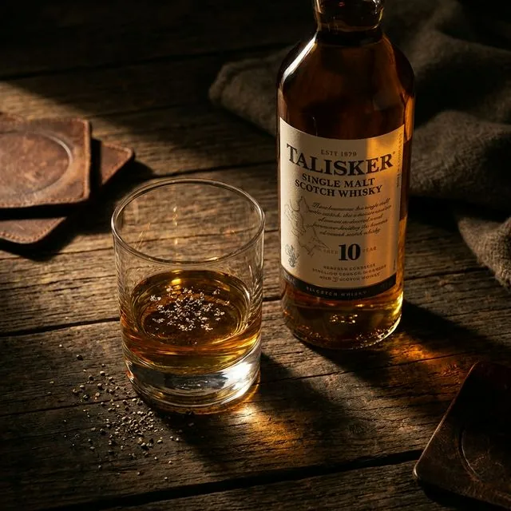

価格破壊。3,000円以下なのに高級バーで出てくるウイスキー5選
「ウイスキーは高いもの」という思い込み、捨ててください。
実は、一流バーのバーテンダーたちが「コスパが異常」と口を揃える銘柄が存在します。
価格は3,000円以下。なのに、グラスに注いだ瞬間、その香りはまぎれもなく「本物」です。
今回は、そんな「知ってる人だけ得をする」ウイスキーを5本厳選しました。

1. バランタイン 12年（スコッチ）
「12年熟成が3,000円以下」という奇跡スコッチウイスキーの王道・バランタイン。その12年熟成ボトルが、なんと2,500円前後で手に入ります。
なめらかなバニラの甘みと、ほんのりスモーキーな後味。これを飲んで「普通のウイスキーとは違う」と初めて気づく人が続出しています。
- おすすめの飲み方: ハイボール、またはロック
- 価格帯: 2,200円〜2,800円
2. グレンリベット 12年（シングルモルト）
世界で最も売れているシングルモルトが、この価格シングルモルトとは、一つの蒸留所だけで作られた純粋なウイスキーのこと。
グレンリベットは「スコッチの父」と呼ばれる蒸留所で、その12年物が3,000円前後で買えます。
洋梨やパイナップルのようなフルーティな香りは、ウイスキーが苦手な人でも「これなら飲める」と驚く一本。
- おすすめの飲み方: ストレートかトゥワイスアップ
- 価格帯: 2,800円〜3,200円
3. ジョニーウォーカー ブラックラベル 12年（スコッチ）
「ジョニ黒」は、なぜ世界中のバーに置いてあるのか「ジョニ赤は知ってるけど、黒は飲んだことない」という方へ。
ジョニーウォーカーの黒ラベルは、赤とは別次元の完成度です。ドライフルーツとスモークが複雑に絡み合い、「これが2,500円？」と思わず値札を二度見するレベル。
世界中のバーに置いてある理由が、一口で分かります。
- おすすめの飲み方: ロック、またはストレート
- 価格帯: 2,300円〜2,800円
4. サントリー オールド（ジャパニーズ）
日本人が忘れかけている「昭和の名酒」が再評価中かつて「だるまさん」と呼ばれ、日本中のサラリーマンに愛されたウイスキー。
一時は時代遅れと言われましたが、今や若い世代のバーテンダーが「実はすごい」と再発見しています。
シェリー樽由来のレーズンと蜂蜜の香りは、他の追随を許さない独特の個性。2,000円以下で買えるのに、この複雑さは反則です。
- おすすめの飲み方: ハイボール（水割りも◎）
- 価格帯: 1,500円〜2,000円
5. デュワーズ 12年（スコッチ）
バーテンダーが「自宅でも飲む」と言う、業界人御用達の一本バーテンダーが「仕事でもプライベートでも飲む」と公言するほどの完成度。
蜂蜜とバニラの甘みに、ほのかなシトラスが重なる、飽きのこない味わいです。
日本ではまだ知名度が低いため割安ですが、海外では高評価が定着しています。「知る人ぞ知る」を体験したい方に。
- おすすめの飲み方: ハイボール、またはロック
- 価格帯: 2,500円〜3,000円
まとめ：「値段で選ぶ時代」は終わった
ウイスキーの本当の価値は、価格ではありません。
今回紹介した5本は、どれも3,000円以下。しかし一流バーのバーテンダーが認める本物の味です。
次に友人を家に招いたとき、この中の一本をさりげなく出してみてください。
「え、これ家にあるの？」と、確実に一目置かれます。